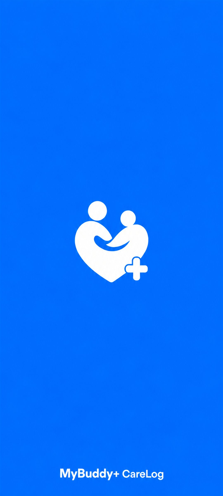
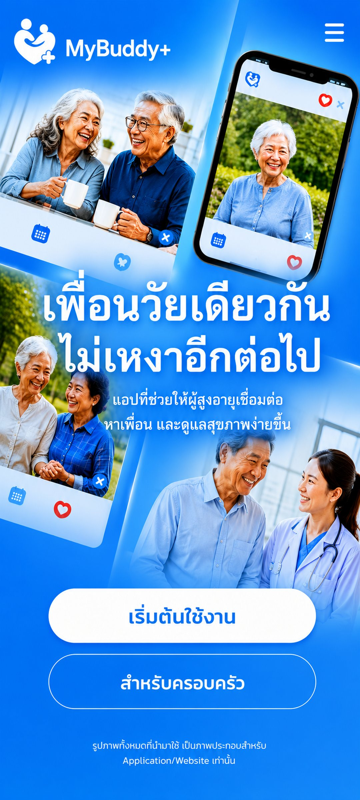
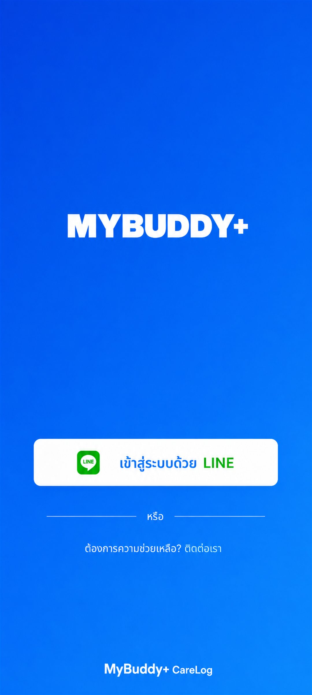
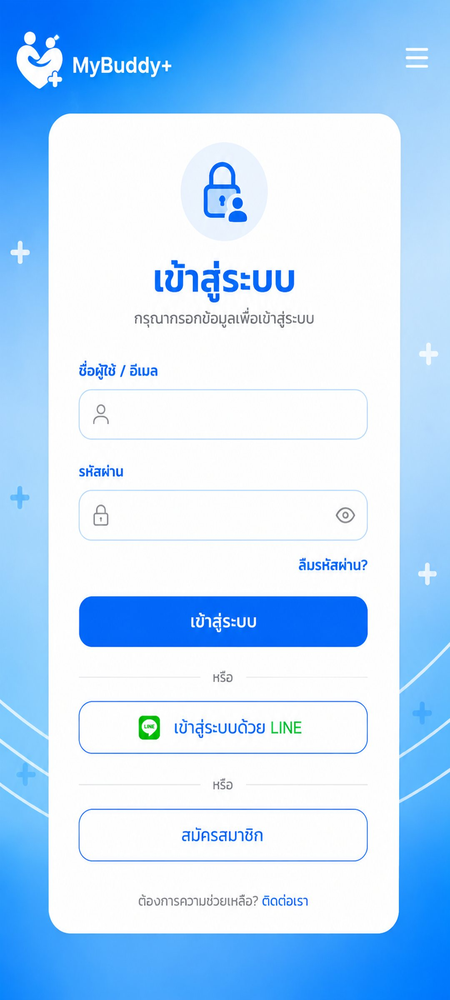
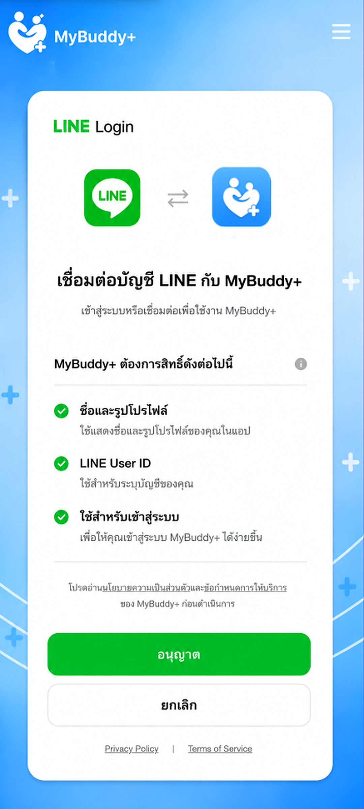

 SOS
SOS
✨
แนะนำ


📄
เอกสารนัดหมาย
เตรียมไว้ให้พร้อมก่อนออกจากบ้าน เพื่อลงทะเบียนและพบแพทย์ได้ไวขึ้น
🗓️
ประวัติการนัด
ตัวอย่างระบบสรุปนัดที่ผ่านมาและนัดล่าสุด เพื่อให้ผู้ใช้เห็นภาพการใช้งาน
30 ก.ค. 2567 • 10:00 น.
โรงพยาบาลรามาธิบดี • แผนกโรคหัวใจ
สถานะ: ใกล้ถึงนัดหมาย
15 มิ.ย. 2567 • 09:30 น.
ตรวจเลือดประจำปีและวัดความดัน
สถานะ: เข้ารับบริการแล้ว
20 พ.ค. 2567 • 13:00 น.
ปรึกษาแพทย์ออนไลน์ เรื่องการนอนหลับ
สถานะ: เสร็จสิ้น
รายการที่บันทึกในเครื่อง
✅
สิ่งที่ต้องเตรียม
เช็กทีละข้อก่อนพบแพทย์ ช่วยให้เล่าอาการครบและไม่ลืมถามเรื่องสำคัญ
จดคำถามและอาการเขียนคำถามที่อยากถาม อาการที่เป็น เริ่มเมื่อไร อะไรทำให้ดีขึ้นหรือแย่ลง
เตรียมรายการยาจดชื่อยา วิตามิน สมุนไพร อาหารเสริม และอาการแพ้ยา หรือพกยาจริงไปด้วย
พาญาติหรือผู้ดูแลไปด้วยให้ช่วยฟัง ช่วยจด และช่วยถามในกรณีที่จำรายละเอียดไม่ครบ
วันนัดไปก่อนเวลาเผื่อเวลาลงทะเบียน วัดความดัน ชั่งน้ำหนัก และตรวจเอกสารก่อนพบแพทย์
หลังพบแพทย์ถามวิธีใช้ยา นัดครั้งถัดไป อาการที่ต้องรีบกลับมาพบแพทย์ และช่องทางติดต่อ
📞
ติดต่อเจ้าหน้าที่
โทรสอบถามนัดหมาย เปลี่ยนเวลา หรือขอความช่วยเหลือเรื่องการเดินทาง
โรงพยาบาลรามาธิบดี02-201-1000
ศูนย์นัดหมายเปิดบริการ 08:00 - 18:00 น. ทุกวันทำการ
โทรหาเจ้าหน้าที่


คุณกานิน, 64
อยู่ใกล้สวนลุมพินี ประมาณ 0.8 กม.
ความสนใจเดินเล่น สุขภาพ กาแฟเช้า
เวลาที่สะดวกช่วงเช้า
ต้องการหาเพื่อนแบบไหนเพื่อนคุยและเพื่อนเดินเล่น
ข้อควรทราบเดินได้ปกติ แต่ไม่ต้องการกิจกรรมที่หนักมาก


คุณกานิน
ระบบโทรและวิดีโอคอลเป็นเดโมสำหรับนำเสนอการทำงาน

ชวน Buddy ทำกิจกรรมด้วยกัน
ชื่อกลุ่มกลุ่มเดินเล่นตอนเช้า
สมาชิกแนะนำคุณกานิน / คุณผู้ชาย
กลุ่มเดินเล่นตอนเช้า
วางแผนกิจกรรมร่วมกัน

จัดรถให้ไปถึงจุดหมายร่วมกัน
เที่ยวรถของคุณ
สถานะการเดินทาง
พร้อมใช้งานเมื่อบันทึกกิจกรรมหรือเรียกรถ ระบบจะแสดงสถานะที่นี่

ขอความช่วยเหลือฉุกเฉิน
ปุ่มนี้เป็นเดโมสำหรับแจ้งเตือนครอบครัวหรือผู้ดูแลในระบบจริง
โทรฉุกเฉิน: 1669
แจ้งครอบครัว: พร้อมต่อระบบจริง

5 กิจกรรมง่าย ๆ ฝึกสมอง ป้องกันความจำเสื่อม
กิจกรรมเล็ก ๆ ที่ทำได้ทุกวันช่วยกระตุ้นความจำ สมาธิ และการคิดเป็นลำดับ เหมาะสำหรับผู้สูงอายุที่อยากดูแลสมองอย่างต่อเนื่อง
เล่นเกมจับคู่ภาพหรือเรียงสี 10-15 นาที
อ่านข่าวสั้น ๆ แล้วเล่าให้คนใกล้ตัวฟัง
จดบันทึกสิ่งที่ทำในแต่ละวัน
ฝึกคำนวณง่าย ๆ เช่น รวมราคาของในบ้าน
ทำงานประดิษฐ์หรือปลูกต้นไม้เบา ๆ
อาหารเช้าเพื่อสุขภาพ เคี้ยวง่าย ย่อยสะดวก
เลือกอาหารที่นุ่ม ย่อยง่าย และมีโปรตีนพอเหมาะ ช่วยให้เริ่มวันได้สดชื่นและลดภาระการย่อยอาหาร
โจ๊กข้าวกล้องใส่ไข่และผักอ่อน
ข้าวต้มปลา ลดเค็ม เพิ่มขิงเล็กน้อย
โยเกิร์ตรสธรรมชาติกับผลไม้เนื้อนุ่ม
เต้าหู้นึ่งราดน้ำซุปอ่อน ๆ
วิธีฝึกสมาธิเบื้องต้นฉบับวัยเก๋า เพื่อหลับสนิทดี
การฝึกหายใจช้า ๆ ช่วยให้ร่างกายผ่อนคลาย ลดความกังวล และเตรียมพร้อมสำหรับการพักผ่อนตอนกลางคืน
นั่งสบาย ๆ หลังตรง ไม่เกร็ง
หายใจเข้า 4 วินาที ออก 6 วินาที
ทำต่อเนื่อง 5-10 นาที ก่อนนอน
ถ้าใจลอย ให้ค่อย ๆ กลับมารู้ลมหายใจ
ดูแลได้ในหน้าเดียว
ตำแหน่งล่าสุด: บ้าน
สุขภาพวันนี้: ปกติ
นัดหมายถัดไป: ยังไม่มี
SOS: พร้อมใช้งาน
กู้คืนบัญชี
กรอกเบอร์โทรหรืออีเมลของครอบครัว เพื่อรับรหัสยืนยันสำหรับตั้งรหัสผ่านใหม่
สร้างบัญชีครอบครัว
หน้านี้เป็นตัวอย่างขั้นตอนสมัครสมาชิก เพื่อเชื่อมครอบครัวกับผู้สูงอายุในระบบจริง
ติดต่อ MyBuddy+
หน้านี้เป็นหน้าช่วยเหลือชั่วคราวสำหรับต่อระบบจริงในขั้นถัดไป
LINE Official: @MyBuddyPlus
โทร: 02-000-0000
เวลาทำการ: 08:00 - 18:00 น.
เริ่มใช้งาน MyBuddy+
1. กดเริ่มต้นใช้งาน แล้วเข้าสู่ระบบผ่าน LINE
2. หน้าเมนูหลักใช้เลือก กินยา นัดหมายแพทย์ สุขภาพ และ Buddy
3. ข้อมูลยาและนัดหมายที่บันทึกจะแสดงในช่องการแจ้งเตือน